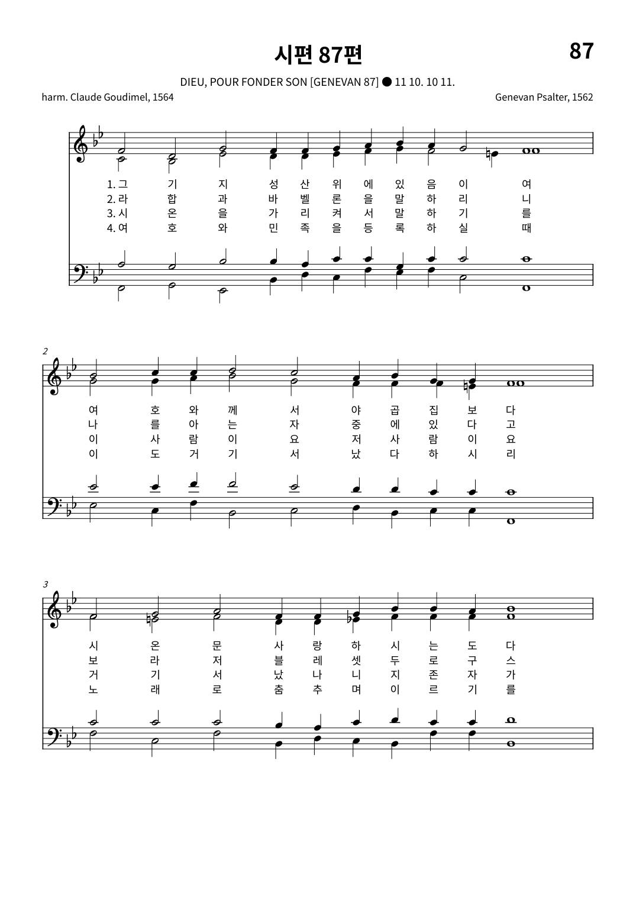

Psalm 87
DIEU, POUR FONDER SON [GENEVAN 87] · 11 10. 10 11.
English title: Our Gracious God Has Laid His Firm Foundation
Tune: Genevan Psalter, 1562 · Harmony: Claude Goudimel, 1564 · Lyrics: Korean adaptation of Psalm 87 from the Korean Revised Version (AI draft adaptation · not yet theologically reviewed) · 4 stanzas
Score PDF MusicXML (for printing) MusicXML (for accompaniment, with prelude and repeats) Read Psalm 87 (Korean Revised Version)
Score
← Psalm 86 ListAccompaniment (in preparation)Psalm 88 →
Lyrics (Korean)
Stanza 1 (Ps. 1-3)
그 기지 성산 위에 있음이여
여호와께서 야곱 집보다
시온 문 사랑하시는도다
하나님의 성 영광스럽도다
그 기지 성산 위에 있음이여
여호와께서 야곱 집보다
시온 문 사랑하시는도다
하나님의 성 영광스럽도다
Stanza 2 (Ps. 4)
라합과 바벨론을 말하리니
나를 아는 자 중에 있다고
보라 저 블레셋 두로 구스
이도 거기서 났다 하리로다
라합과 바벨론을 말하리니
나를 아는 자 중에 있다고
보라 저 블레셋 두로 구스
이도 거기서 났다 하리로다
Stanza 3 (Ps. 5)
시온을 가리켜서 말하기를
이 사람이요 저 사람이요
거기서 났나니 지존자가
친히 시온을 세우시리로다
시온을 가리켜서 말하기를
이 사람이요 저 사람이요
거기서 났나니 지존자가
친히 시온을 세우시리로다
Stanza 4 (Ps. 6-7)
여호와 민족을 등록하실 때
이도 거기서 났다 하시리
노래로 춤추며 이르기를
나의 근원이 다 네게 있도다
여호와 민족을 등록하실 때
이도 거기서 났다 하시리
노래로 춤추며 이르기를
나의 근원이 다 네게 있도다